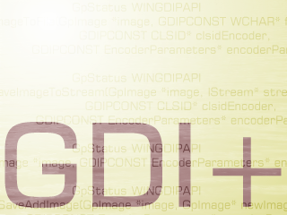

GDIPlus Wrapper (57K)
GDIPlus Wrapper (57K)
 Bugs: 1 / 1
Bugs: 1 / 1
 Issues: 0 / 0
Issues: 0 / 0
 Questions: 0 / 0
Questions: 0 / 0
 28 Mar 2003
28 Mar 2003
First Posted
 GDI+ Type Library (GDIPlus.TLB)
GDI+ Type Library (GDIPlus.TLB)

GDI+ Wrapper
An ongoing project to provide GDI+ functions to COM applications
The GDI+ Wrapper project is a DLL that works on top of Dana Seaman's excellent GDI+ Type Library and aims to provide COM applications with a wrapper providing equivalent functionality to the C++ and .NET GDI+ classes.
The current version provides support for Images and Bitmaps. Further contributions to the library are encouraged!
About GDI+
GDI+ is Microsoft's new graphics programming API for Windows that offers enhanced functionality over the existing GDI functions. In particular, you get built in support for many more graphics file formats, colour-management functions, alpha and gamma functions for drawing, extremely powerful transformation functions and much more.
GDI+ can be used in all Windows-based applications. GDI+ is included with Microsoft Windows XP and Windows .NET Server operating systems. However, it can also be installed from the freely available Microsoft redistributable for applications that run on Windows NT 4.0 SP6, Windows 2000, Windows 98, and Windows Millennium Edition operating systems:
Using GDI+ From VB
Whilst the GDI+ library distributed with the Platform SDK is packaged in a form usable by C/C++ developers, this doesn't preclude using it in other languages. For example, the System.Drawing namespace in .NET provides a thin Managed-code wrapper around the GDI+ functions.
Using it from VB though is more difficult. The next section describes these in more detail and how they are overcome in the library. However, the excellent starting point for this code is Dana Seaman's dseaman@cyberactivex.com GDI+ Type Library, which includes all but a tiny portion of the structures, enumerations and declares you need to call GDI+ functions. You can download his Type Library, and his example project which demonstrates a highly sophisticated Unicode-based drawing using alpha, texture brushes and much more from Planet Source Code here:
http://www.Planet-Source-Code.com/vb/scripts/ShowCode.asp?txtCodeId=42861&lngWId=1
Please go there and give him your vote, and voice some nice opinions since this is a fantastic effort.
However, whilst the Type Library gives you direct access to the native functions, it doesn't allow you to use GDI+ in the same way that most of the articles demonstrate since the actual GDI+ class library is not included. In addition, some of the GDI+ functions (like Property Id tags and Image Encoder Parameters) are declared in an unfriendly way, which means you need additional code beyond the Type Library declares to call them safely.
This article presents a Visual Basic COM wrapper that emulates (and in some cases needs to provide enhancements to make the functions easier to use) the GDI+ class library. As noted, this version only implements Image and Bitmap related functionality. Please read the contribution details below to find out how you can help to add more functions to the library (text, brushes and pens are the next on the list).
Building A GDI+ Wrapper
This section of the article details some of the issues that occurred as I built this library and how I worked around them.
There are some difficulties with direct translation of the GDI+ class library, some related to COM and some related to Visual Basic. I'll cover these in turn.
1. COM Translation Problems
- Implementation Inheritance
In GDI+, for example, the Bitmap class extends Image. By appropriate casting, you can therefore access all of the Image's functions from a Bitmap. COM only supports Interface Inheritance, so whilst you could emulate the GDI+ version using interfaces, this means the same code would have to be written multiple times in concrete instances of the interface. - Method Overloading
The class library makes extensive use of method overloading to provide multiple versions of the same method with different parameters. For example, there are some 20 or so different versions of the DrawImage function within the Graphics class. In COM each method requires its own name. - Parameterised Constructors
COM does not support initialising a class with parameters. So whilst the library offers ways to construct, for example, an instance of the Bitmap class with the specified pixel format and size, a COM call can only construct a default instance.
All of these problems can be resolved by the use of programming conventions in the converted wrapper object.
- Implementation Inheritance.
I have chosen to make the base class(es) available through a property get call on the subclass. So for example, my Bitmap class offers and Image Property Get, which returns an Image class for the bitmap. This is slightly more awkward to use but ensures complete consistency of functionality without code duplication.
For example, in GDI+ you can access the Width property of a Bitmap directly:
Bitmap* bm = new Bitmap(L"Spiral.png"); printf("\nBitmap width:%d\n", bm.GetWidth());In my class library you need to get the Image object of the Bitmap first:
Dim bm as New GDIPBitmap bm.FromFile("Spiral.png") Debug.Print "Bitmap Width:"; bm.Image.Width - Method Overloading
Here I chose to add to the method name to indicate which function is supported. So for example, the Graphics class supports four different ways of drawing a bitmap into a rectangular area: two take integer parameters and two use real parameters, and there is a version which takes a rectangle structure and a version which takes individual parameters in each case. In the resulting library, I add the word Rect and then a couple of prefixes to indicate which is which:
- DrawImageRectL - The L indicates long parameters.
- DrawImageRectLv - The v indicates the method takes the values directly, rather than the structure containing the values.
- DrawImageRectF - The F indicates real parameters.
- DrawImageRectFv - The v indicates values rather than a structure again.
- Parameterised Constructors
Here I either use existing methods of the class which are equivalent to the constructor (for example, Bitmap has a FromFile method which is equivalent to constructing a Bitmap with a file name parameter) or add a new Create[xxx] method, where [xxx] describes the type of creation required.
2. VB Translation Problems
- Unicode Strings
The entire GDI+ library is Unicode based (although obviously if you're working on Windows 98 or ME you're still restricted to displaying characters available on the installed character set). Therefore when declaring functions you cannot use VB's As String construct, because VB automatically converts all such string parameters to ANSI before making the declared call. Using a Type Library to call the declarations greatly assists with this since function declarations can include Unicode string parameters.
Tip: Working With Pointers and Unicode Strings
If you can't use a direct Type Library declaration to resolve a Unicode problem, as for example when a string is a member of a structure passed in and out of a function, then you can usually work around the problem quite easily using arrays of bytes, CopyMemory and lstrlenw.
For example, to create a pointer to a Unicode string to pass into a function, just convert the string to an array of bytes and then use the pointer to the first byte:
' Convert string into a byte array: Dim b() As Byte b = "This is the String" ' Add null termination: Redim Preserve b(0 To Ubound(b) + 2) As Byte ' Get the pointer to the string: Dim lPtrString As Long lPtrString = VarPtr(b(0))
If the function doesn't modify the pointer during execution, then the byte array will contain the new string when the function completes. If the function does modify the pointer, or returns you a new one, then you can use lstrlenw and CopyMemory:
' Find the length of the string: Dim lSize As Long lSize = lstrlenw(ByVal lPtrString) ' Create a buffer large enough to hold it: ReDim b(0 To lSize * 2 - 1) As Byte ' Copy the string into the buffer: CopyMemory ByVal VarPtr(b(0)), ByVal lPtrString, lSize * 2 ' Convert back into a string: Dim theString As String theString = b
Finally, remember that any buffers that you do set up must be valid within the scope of the function call you're going to make. For example, although it may be convenient to provide a function to return a pointer to the appropriate bytes, this will only work if the bytes you allocate are still in memory when the function returns:
Bad
Public Function EvalVisibleSize(ByVal sText As String) As Long Dim lBuf As Long lBuf = getStringPtr(sText) ' This will crash as lBuf doesn't point to anything! DrawTextW m_hDc, lBuf, -1, m_TextR, _ DT_MODIFYSTRING Or DT_END_ELLIPSIS or DT_SINGLELINE EvalVisibleSize = lstrlenw(lBuf) End Function Private Function getStringPtr(ByVal sText As String) As Long Dim b() As Byte b = sText ReDim Preserve b(0 to Ubound(b) + 2) As Byte getStringPtr = VarPtr(b(0)) ' No good! b(0) goes out of scope here End FunctionYou either need to move the getStringPtr function into the DrawText function or make getStringPtr work on an array of bytes within a scope that includes anything that calls it: which of course might destroy any generic purpose of such a function...
- Pointers, Buffers, Other Problems
Many of the GDI+ functions take pointers to structures as input. Often, these have variable length input, and structures include pointers to structures or even just buffers in memory.
Such things are not impossible to use in VB, they just tend to make life more difficult. For example, consider setting up the parameters to the JPEG GDI+ Image Codec prior to saving a file to JPEG. The Platform SDK definitions for this function are as follows:
class EncoderParameters { public: // Number of parameters in this structure UINT Count; // Parameter values EncoderParameter Parameter[1]; }; class EncoderParameter { public: // GUID of the parameter GUID Guid; // Number of the parameter values ULONG NumberOfValues; // Value type, like ValueTypeLONG etc. ULONG Type; // A pointer to the parameter values VOID* Value; }; GpStatus WINGDIPAPI GdipSaveImageToFile(GpImage *image, GDIPCONST WCHAR* filename, GDIPCONST CLSID* clsidEncoder, GDIPCONST EncoderParameters* encoderParams);The pointer that gets passed as the encoderParams needs to be a structure in memory containing first a long variable containing count, followed by an array of EncoderParameter structures (which, despite the misleading [1] count in the declare, can be of any length you want). The next issue is that the data type of the information contained by an EncoderParameter structure is arbitrary depending on the particular encoder you're using - it could be an array of long values, a single float value and so on. In memory, this must be laid out as a pointer to the memory. This leads to a thorny coding problem in VB and in the Type Library: how do you declare the parameters you're going to pass if you don't know how may of them there are or anything about how their data is laid out in memory? You can't take advantage of anything that helps you do it in VB, such as Variants, since the C library was not written using these structures.
There are no standard answers to these kinds of questions. The only real way around them is to work out what would be expected in memory and build it up as best you can, using a combination of structures and memory allocations as required. In the case of the function above, you can find the resulting code in the GDIPlusWrapper library in the GDIPImage class Save function. It takes advantage of two functions provided by GDI+ to make it easier to allocate and free memory buffers for use with GDI+:
Private Declare Function GdipAlloc Lib "gdiplus.dll" ( _ ByVal size As Long) As Long Private Declare Function GdipFree Lib "gdiplus.dll" ( _ ByVal ptr As Long) As Long
Sample Usage
This sample demonstrates how to load a PNG file and then draw it, scaled to half size onto a PictureBox. To run it, start a new VB project, reference the GDI+ Type Library and the GDIPlusWrapper.DLL, add a PictureBox to the form and set the AutoRedraw property to True. Then add this code to a Command Button, and modify the "C:\TestImage.png" to point to some actual graphics file on your system.
' Must call this before using any GDI+ call:
If (GDIPlusCreate()) Then
' Create the Image and load the file:
Dim im As New GDIPImage
im.FromFile "C:\TestImage.png"
' Create a Graphics object:
Dim gfx As New GDIPGraphics
' Initialise it to work on the PictureBox HDC:
gfx.FromHDC(Picture1.hDC)
' Set the stretching mode to highest quality:
gfx.InterpolationMode = InterpolationModeHighQualityBicubic
' Draw the image, stretching it to half size:
gfx.DrawImageStretchL _
im,
0, 0,
0, 0, im.Width \ 2, im.Height \ 2, _
UnitPixel
' Clear up the Graphics object (also can
' use 'Set gfx = Nothing'):
gfx.Dispose
' Clear up the Image object (also can use
' 'Set gfx = Nothing'):
im.Dispose
Picture1.Refresh
' Must call this before ending the program,
' and after all GDI+ objects are disposed.
GDIPlusDispose
End If
If you look at the GDI+ and .NET System.Drawing documentation, you will see this code is not far away at all from using the classes directly!
Contribute
If you'd like to contribute towards this library then that would be excellent. To adopt an area to contribute towards, please send an email to steve@vbaccelerator.com with the bit you'd like to try. Contributions must be written in VB6 and come with a sample or samples demonstrating the functionality, and should as far as possible adhere to the coding conventions of the existing classes.
The following wrapper functions are open for coders:
- Brushes
Status: OPEN
Classes required: GDIPBrush, GDIPBrushes, GDIPSolidBrush, GDIPSystemBrushes, GDIPTextureBrush, GDIPHatchBrush, GDIPLinearGradientBrush, GDIPPathGradientBrush.
GDIPGraphics functionality: FillClosedCurve, FillEllipse, FillPath, FillPie, FillPolygon, FillRectangle(s), FillRegion.
- Pens
Status: OPEN
Classes required: GDIPPen, GDIPens, GDIPSystemPens, GDIPAdjustableArrowCap, GDIPCustomLineCap.
GDIPGraphics functionality: DrawArc, DrawBezier(s), Draw(Closed)Curve, DrawEllipse, DrawRectangle(s), DrawPath, DrawPie, DrawPolygon.
- Text
Status: Adopted by Steve ( steve@vbaccelerator.com)
Classes required: GDIPFont, GDIPFontConverter, StringFormat, GDIPInstalledFontCollection, GDIPFontCollection, GDIPPrivateFontCollection.
GDIPGraphics functionality: DrawString.
- IStream Support
Status: OPEN
Currently the Image class does not support loading or saving to/from an IStream. There is an attempt in the GDIPlusWrapper.DLL to implement this functionality for loading but it fails with GDI+ error 2 (invalid type). I'm guessing that this is because I'm passing in the wrong class pointer - can anyone figure out how to solve this?
- Printing
Status: OPEN
Refer to the Microsoft.NET System.Drawing.Printing online documentation for details.
- Documentation
Status: OPEN
Any documentation for the library.
- Other
Status: OPEN
Matrices, Paths, Enumerable Metafile support, plus anything else I've forgotten!